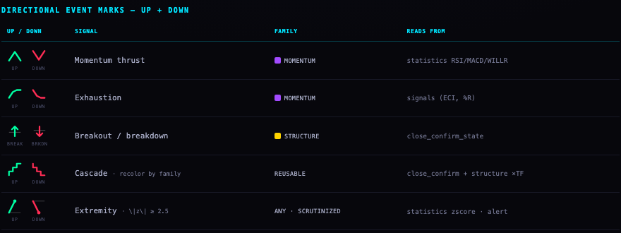
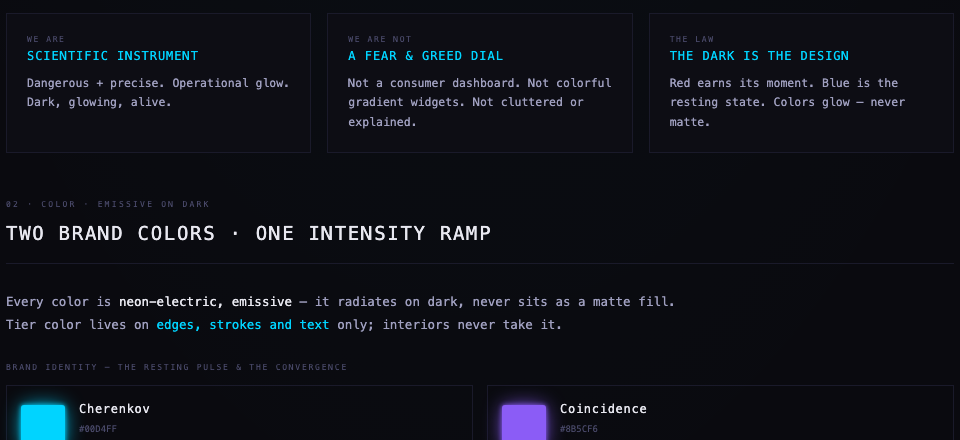
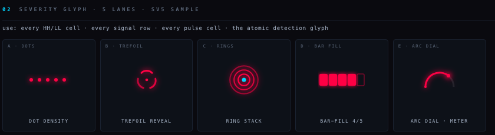
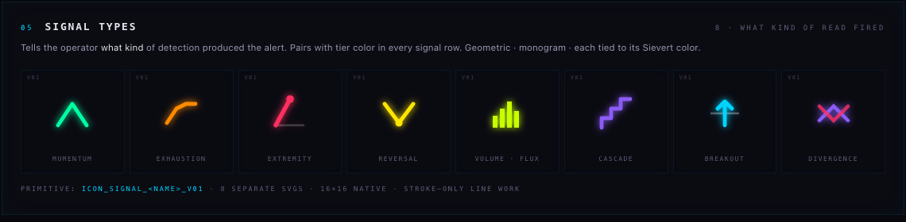
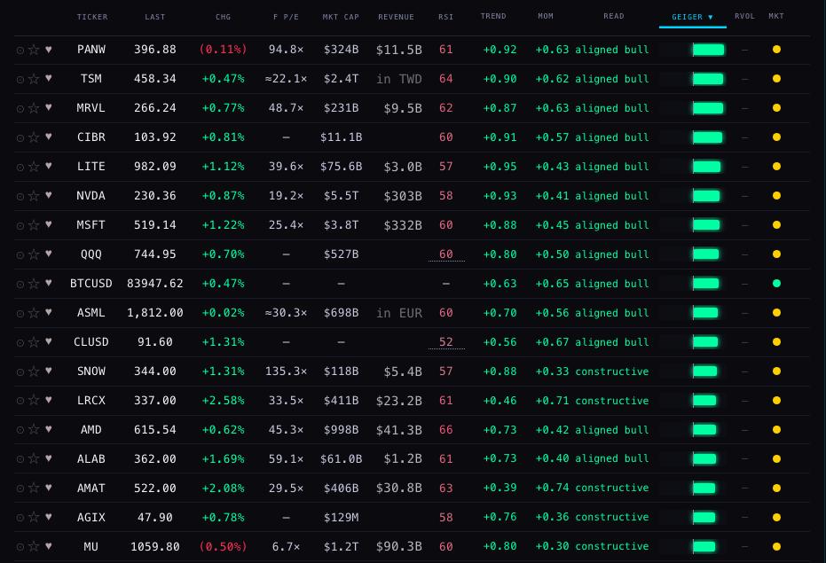
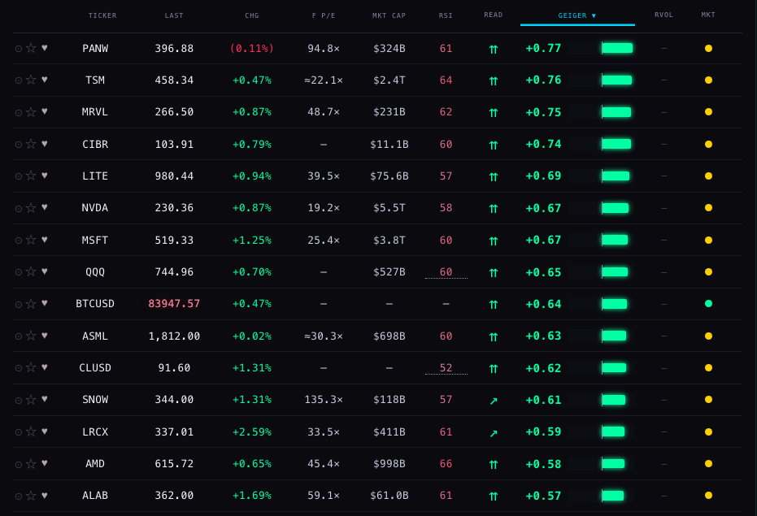

What this page is: a proposal, in plain words, for turning the three board columns TREND · MOM · READ into one small icon that can be scanned down the board, with the detail (the two Geigers and the sentence) one click away, and the freed width given to the Geiger bar. Nothing live has changed. No edit to the Hub, the board, the Station or any shipped page. Every drawing below is drawn on this page only.
Alan, 1 Oct: "We have trend, momentum, read. It takes up a ton of space. We need to translate the read into some kind of icon… There is a candidate that could be a small Geiger ring, but I'm not sure that I love that… clicking on that expands more detail. It shows me the trend and momentum Geigers and the sentence read… that space gets used for more Geiger width."
The brief said the material is old and scattered. It is. Here is what is there, what Alan used or approved, and what is dead. Dates are the files' own.
| File | Date | What it holds | Status |
|---|---|---|---|
| SCINTILLA_ICONOGRAPHY_ALL.html | 21 Jun | Four earlier documents stitched together: the North Star (31 May), the Variants sheet, the Final Polish (8 Jun) and Spec 02. | Reference. Nothing from it shipped as drawn. |
| · North Star (31 May) | A Greek-letter vocabulary (ρ μ ν τ β σ δ χ) for cohorts and levels; the trefoil locked; a severity glyph with three lanes (dot density, trefoil reveal, ring stack) and six Sievert tiers; eight signal-type marks (momentum chevron, exhaustion curve, extremity spike, reversal V, volume bars, cascade stairs, breakout arrow, divergence cross); HH / HL / LH / LL structure letters; LIVE / OK / WARN / STALE / DEAD dots; freshness dots. | Greek letters: dead (the 8 Jun polish says "NO GREEK"). Six-tier Sievert ramp: dead, overruled by the two-colour rule ("I want my fucking green and red. Only those tones."). Severity lane: never chosen. Signal-type shapes: alive as ideas, used below. | |
| · Variants sheet | Four or five drawings of each mark; adds two severity lanes, D bar-fill and E arc dial. | Never chosen. | |
| · Final Polish (8 Jun) | Every directional mark drawn as an UP and a DOWN form, green and red; volume rebuilt; the BTC-page skeleton. | Carried into Spec 02. | |
| · Spec 02 (June) | "Set approved (up/down confirmed). Recolor cascade by family; don't make new shapes." The momentum chevron ∧ ∨, exhaustion curve, breakout arrow, cascade stairs, extremity spike, each in green up / red down. | Approved by Alan at the time. Never built on the Hub. The chevron pair below (candidate C) is this vocabulary. | |
| SCINTILLA_ICONOGRAPHY_AUDIT.html | 20 Jun | 359 glyphs found in 6,641 files, sorted: directional ▲▼↑↓↗, dots and rings ● ○ ◉ ◎ ◆, stars ★ ✦, "nuclear" marks ⚡ ◉ ◎ ⚛ ☢, status ✓ ✕ ⚠, chrome ⛶ ⌕. Notes which were already in use (★ 390 times) and which were candidates. | Reference. ◎ went on to become RADAR. ◆ went on to become the divergence mark. |
| SCINTILLA_LOGO_MENU.html | 15 Jun | The left drawer with thin cyan line icons per room. | Shipped in spirit: the Hub's menu uses that line-icon set (chat, equalizer, favorite, cohort, files, systems, alerts). |
| SCINTILLA_VERDICT_LADDER.html · 05_VERDICT_LADDER_yours.html | 28 Jun | The structure read (higher-high / lower-low) across 13 timeframes, slow on top, as a tape that expands to a ladder. | Dead: it needed close_confirm_state, which was never filled. Its one idea that survives here: a collapsed one-line mark that clicks open to the full detail. |
| SCINTILLA_DESIGN_SYSTEM.html | 18 Jul | The tokens (bg, panel, line, ink, cyan, the five family hues: trend blue, momentum violet, structure gold, volume orange, volatility pink), type, the real chrome icon set, the cohort board, the Geiger summary. | Live canon for chrome. The family hues are not used on the board: direction is green and red only. |
| SCINTILLA_VISUAL_THEME.html · SCINTILLA_BRAND_BASICS.html · SCINTILLA_DESIGN_KIT/ | 24 Jul | "Detection in the dark." The trefoil (locked). The G-2 meter: three concentric 240° arcs, MICRO · MID · LONG, cyan at rest, Sievert colours when hot. The brand rulebook with the Hub's own CSS embedded. The live component gallery. | Trefoil: live, locked. G-2 ring meter: dead on the Hub since 27 Sep. The rulebook's laws still hold: glow on dark, mono, square and hairline, motion only when it means detection. |




Trend is the slow, daily-locked measure; momentum is the fast one (the equalizer weights 6h, 12h and 1D). Both run from −1 to +1. The rule is tested top to bottom; the first line that matches wins. The counts are from a headless read of the live Hub this morning (1 Oct, about 08:00 ET, market closed): the board as it opens, on LIKED (128 names), and the whole universe the Hub tracks (546 names). ◆ counts the rows where the divergence mark would also show.
| Read | Condition (trend T, momentum M) | Colour today | In words | LIKED 128 | ALL 546 |
|---|
"trend only" (momentum missing) and "—" (no trend) are the two non-reads; neither occurred on LIKED this morning. The ◆ is not a state: it rides on top of the word (pullback and turning up always carry it; mixed, constructive and stalling sometimes do).
Every candidate is drawn for every state at the size it would have on a board row (the row is 33 px tall and the text is 11 px, so the glyph box is 16 px) and at three times that size so the shape can be read here. The ◆ divergence mark stays as it is, beside the icon, in every candidate. Rules applied: dark panel, green up and red down, no white, no grey lines, the shape carries the state and the colour repeats it. Representative trend and momentum values are real rows from this morning's board where a state occurred; where it did not occur on LIKED, a row from ALL is used and named; where it occurred nowhere, the value is made up and marked.
Two independent arcs, both starting at twelve o'clock: the outer ring is trend, the inner is momentum. A positive value sweeps clockwise (to the right half), a negative one counter-clockwise (to the left half); the length is the size of the number, so ±1 is a half ring. Near zero is a dot at the top. Divergence shows as the two arcs on opposite sides.
The board's own bipolar bar, twice, stacked: trend on top, momentum below, zero notch in the middle, fill right in green and left in red. It is the exact primitive of the board's Geiger bar and the Station chip, so it needs no learning. Divergence shows as bars on opposite sides of the notch.
Trend above, momentum below. Each is a chevron pointing up (green) or down (red), or a flat dash when it says nothing. Heavy stroke for the strong case (aligned), light stroke for the weaker one (constructive, broken). The shape is the state itself: the icon is scinRead()'s word, drawn. From Spec 02's approved momentum chevron.
What ?board=v2 already draws: one Unicode arrow per word (⇈ aligned bull, ↗ constructive, → stalling, ⤵ pullback, ⤴ turning up, ↑ mom leads, ↔ mixed, ↘ broken, ⇊ aligned bear). Zero drawing work, but the glyphs come from whatever font the device has.
A small square: trend runs left to right, momentum bottom to top, and one dot sits where the row is. Top-right is aligned bull, bottom-left aligned bear, the off-diagonal corners are the divergences. One drawing covers every possible pair of numbers; the dot's colour is the quadrant.
| State | Example row | A · ring | B · twin bars | C · chevrons | D · arrows | E · compass |
|---|
Twenty names picked to cover the states as they occur, in the same order for every candidate. Scan each column top to bottom and count how fast you can find the two pullbacks and the four stalls.
Three tests from the brief, plus two the rules impose. "Told apart in a 20-row scan" was done on the strips above at 1680 and on the phone screenshot at 390.
| Test | A · ring | B · twin bars | C · chevrons | D · arrows | E · compass |
|---|---|---|---|---|---|
| States told apart in a 20-row scan | Weak. Aligned bull and aligned bear are mirror images; at 16 px the direction of the sweep is not visible, only which side has ink and what colour it is. Constructive against aligned differs only by arc length. | Fair, and smaller than it looks here: at 22 × 12 each fill is 2 px tall, so in the mock rows below it is the faintest mark on the board. Same side = agreement, opposite sides = divergence, both clear once seen. Aligned against constructive is a length difference, readable but slower. It would need about 28 × 14 to match the chevrons. | Strong. Up-up, down-down, up-down, down-up, flat-flat are five different silhouettes. Heavy against light stroke separates aligned from constructive. Pullback (green ∧ over red ∨, which closes into a diamond) and turning up (red ∨ over green ∧, an X) are the loudest shapes on the strip, which is the point. One wrinkle: the pullback diamond sits next to the ◆ divergence mark, two diamonds in a row; the ◆ could be dropped for the two states that always carry it. | Weak. ⤵ ⤴ ↑ ⇈ ↗ are one-stroke glyphs that differ in a hook or a second shaft; at 15 px, in the Hub's mono font, ↑ and ⇈ are near twins. | Fair. Quadrant is visible, exact position is not. Mixed (dot near the centre) against constructive (dot a little up-right) is a guess. |
| Shape carries the state without colour | No. Left half against right half is the only shape cue; the sign is really told by colour. | Yes. Side of the notch is the sign; length is the strength. | Yes. Direction and weight are the whole message; colour repeats it. | Mostly. The arrows do point. But similar arrows for different states. | Yes in principle, coarse in practice. |
| Pixels used per row (width × height) | 16 × 16 | 22 × 12 | 14 × 16 | 15 × 23 as shipped (the cause of the 39 px row); 15 × 16 if fixed | 14 × 14 |
| Fit with the Geiger bar beside it | Clashes: a ring next to a flat bar, and Alan already ruled "no ring" for the cohort Geiger (R40). | Same primitive, same colours, same zero notch. The risk is the opposite one: three bars in a row (trend, momentum, composite) can read as one wide thing. | Complements it: the bar says how much, the chevrons say which way the two halves point. | Neutral. | Neutral; a square beside a bar. |
| Fit with the Station chip | The chip is a flat bar with zero ticks; a ring beside it is a second vocabulary. | The chip could simply become three stacked bars (composite, trend, momentum). | Sits before the chip's number at 1cap height; the chip stays a bar. | Font-dependent on the wall. | Would need a square on every chart. |
| Phone (390), 41 px rows | Fits, but the arcs need 18 px to read at all. | Fits at 22 × 12. | Fits at 14 × 16. | Fits if the box height is fixed. | Fits. |
| Build cost (for later; not this lane) | One SVG per row, redrawn on each paint | Two spans with the existing bar CSS | One SVG per row, nine fixed shapes | Already built | One SVG per row |
The ten names and every number are from this morning's live read. The "before" is the real screenshot, then redrawn here with the Hub's own row metrics (33 px rows, 11 px mono, the 14 column widths the board uses at 1680) so the "after" can be compared like for like. (The REVENUE column is left blank in the redraw: the morning read did not capture it; see the real screenshot above for its values.) In the "after", TREND, MOM and READ become one 16 px icon and the Geiger bar takes the freed width: on the 1680 board that is about 230 px today, of which the icon keeps 24 and the bar gains the rest, measured in the mock below as 82 px before against 280 px after, more than three times.


Today the phone board hides TREND, MOM and READ entirely (there is no room for words). A 16 px icon is cheap enough to bring the read back onto the phone, beside the Geiger.
Alan: "clicking on that expands more detail. It shows me the trend and momentum Geigers and the sentence read." The two Geigers are the GEIGER tab's own TREND and MOMENTUM bars (the same flat bipolar bar), and the sentence is the read written out with its two numbers. Drawn for three rows: